I don’t know crap about basketball, but I remember the team of the city where I was born. They are called “Trotamundos”, AKA globetrotters. So I like to think that makes me, naturally, a globetrotter too. I’ve dabbled in the worlds of fashion, posters, branding, motion graphics, vfx, jewelry, 3D, procedural art, and others. Now, I am trotting something more like a solar system that contains the aforementioned, or as others call it, I do art direction.
- experience
- Creative Designer, FutureBrand · Oct. 2025 – Mar. 2026
- 3D Visualization Artist, Freelance · Sep. 2022 – Sep. 2025
- education
- Art Direction Portfolio Program, Miami Ad School Madrid · Sep. 2025 – Present
- Advertising and Public Relations Degree, Universidad Rey Juan Carlos · Sep. 2022 – May. 2026
- awards
- One Show Young Ones Merit Winner
- D&AD New Blood Wood Pencil Winner
- languages
- Native Spanish · Bilingual English · Basic French
- skills
- Adobe Suite · Affinity · Figma · DaVinci Resolve · Blender 3D · TouchDesigner · Vibe coding · Image generation · Having fun
- elsewhere
- thelifeofpita.com · linkedin · instagram · full cv
Math, sports, art. Everything I was supposed to be good at, I suck at. Talking was my only skill. Communications seemed like the only option. My mom told her friends they’d see me on TV one day. She was right. I wasn’t the reporter. I was the news. I still can’t explain to my dad what I do for a living. My best joke was telling him I wanted to live off my creativity. He quoted Brad Pitt in Once Upon a Time in Hollywood. “Fucking hippies, motherfuckers.” I can’t tell the difference between wit and stupidity. But it pays, so call me stupid if you want.
- experience
- AI Shot Integration & Background Design, Black Cat Lab · 2025 – Present
- Director’s Creative Assistant, Black Cat Lab · 2023 – 2026
- education
- Copywriting Program, Miami Ad School Madrid · 2026 – Present
- AI Specialist for Creatives, La Gauss Escuela de Diseño Valencia · 2025 – 2026
- BA in Social Communication, Universidad Católica Andrés Bello · 2018 – 2023
- awards
- Gold — Young Lions Film, Venezuela · 2025
- Shortlist — Young Lions Film, Venezuela · 2026
- Finalist — HumansDID · 2026
- languages
- Native Spanish · Intermediate English
- skills
- Generative AI, Magnific · Post-production, DaVinci Resolve · Vibe coding, Claude
- elsewhere
- linkedin · email